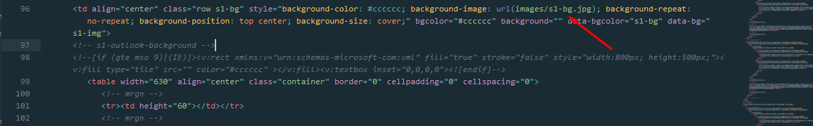
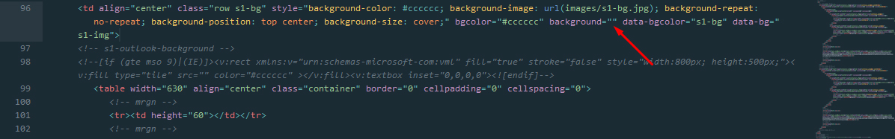

You can edit this template in CampaignMonitor builder.
You will find CampaignMonitor-integrated template in MainFiles/CampaignMonitor folder.
Template named as /TemplateName.html. You can upload only this file into CampaignMonitor builder. Another folders in /MainFiles folder created for another editors!
Attention: Before uploading template to CampaignMonitor, you should change background images, becouse CampaignMonitor editor doesn't provide this function! How do that, see in Customisation
Login or register in CampaignMonitor. Go to Author Dashboard > My templates and click Create a new template > Opload own HTML. Paste template name and then import TemplateName.htmland images.zip from MainFiles/CampaignMonitor/ folder. After template loads, you will see it in "Templates" page. Click on "settings icon" and chose "Create campaign".
For changing background images, you should open /TemplateName.html from MainFiles/CampaignMonitor folder. in in text editor and paste links manually. You can use free SublimeText editor. Also, you should open /TemplateName.html in browser for watching on changes.
After you open template in text editor, click CTRL + F and input in search field background-image.
You will find code like in image. Paste link to your background image into background-image=" yourLink ":

Then paste your link into background=" yourLink ":

Then find another background images and change their links!
Attention: If you have bugs with builder, first of all try to disable browser plugins, such us AdBlock and Grammarly! This plugins may have conflict with builder!
Always test campaigns before sending! After customization, you can see mobile preview or send test email directly from stampready!